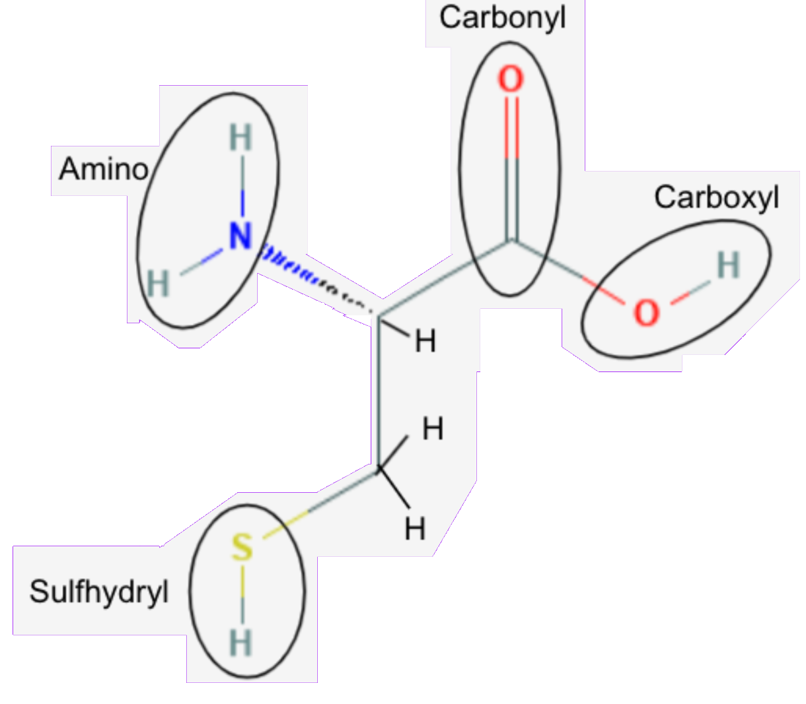

The Cysteine Chapel
According to Pope Francis, the molecule, Cysteine, has an amino group in the top left of this image, as indicated by the NH2 attached to the 2nd carbon, the alpha carbon. Amino groups are polar and facilitate Hydrogen bonds with other amines and molecules. Also there is a Sulfhydryl group in the bottom left indicated by the SH bonded to 1st Carbon. Sulfhydryl groups are slightly polar and the Hydrogen atom allows for Hydrogen bonding if in contact with a Nitrogen, Oxygen, or Fluorine atom. Further there is a hydroxyl group (OH) on the right along with a carbonyl group on the 3rd Carbon. Hydroxyl groups are polar and the presence of Oxygen and Hydrogen allows for Hydrogen bonding with other molecules. The carbonyl group is shown by the double bonded Oxygen atom to the 3rd Carbon and is polar, due to the lack of Hydrogen the carbonyl group will only have dipole-dipole forces but a Hydrogen from another molecule could create Hydrogen bonding between molecules. Since, both the carbonyl and hydroxyl groups are bonded to the same Carbon, there is also a carboxyl group.
Cysteine is an amino acid along with the other molecules in the list. While Cysteine is a nonessential amino acid because it can be synthesized by Methionine, Cysteine is unique because it has a sulfhydryl group at its end. This sulfhydryl group is highly reactive and slightly polar (by .08) which is not really enough to interact with water, giving Cysteine hydrophobic characteristics. The hydrogen in the sulfhydryl group can be replaced with radicals allowing it to covalently bond with a greater variety of molecules. Also, when oxidized, Cysteine’s Sulfur atom creates a disulfide bridge enabling its dimerization and the creation of its dimer, Cystine. The oxidation reaction explains why Cysteine is found in reducing conditions in the cell, like the cytoplasm and nucleus while Cystine would be found in nonreducing conditions like the Endoplasmic Reticulum, lysosomes, and Golgi Apparatus. Cysteine and Cystine can be found in proteins, mainly in beta carotin, which is your hair and nails. Cystine plays a large role in maintaining the structure and stability of protein.
